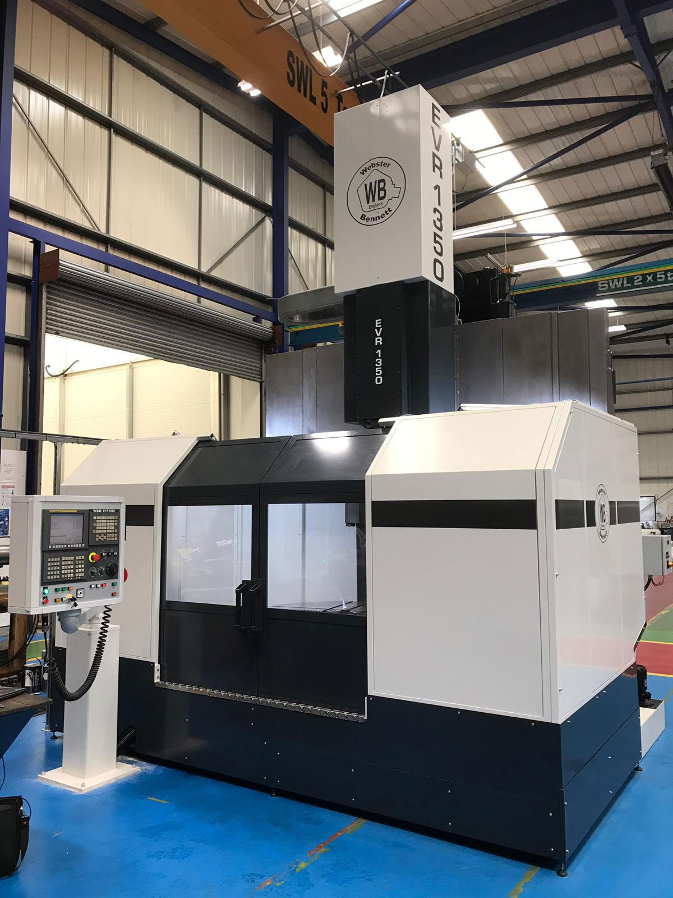
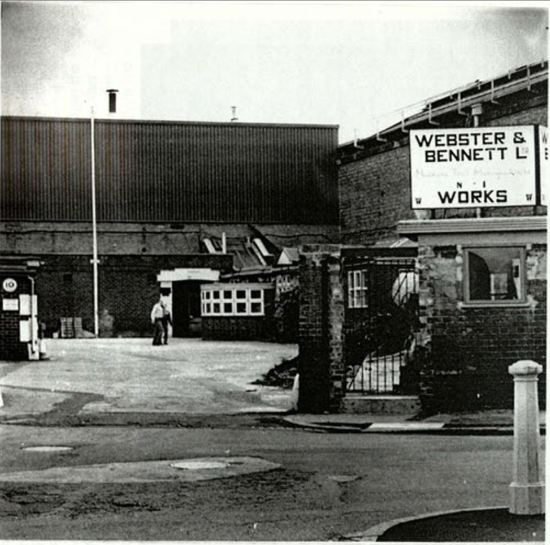

Operated by Scofield Machine Sales & Service, Inc. — exclusive authorized W&B parts distributor for the Americas since 1993.
Scofield Machine Sales & Service, Inc. has been the trusted US source for Webster & Bennett machine tool parts since 1993. We are the exclusive authorized distributor for genuine W&B spare parts in the Americas, sourcing directly from Webster & Bennett in the UK.
We are a focused, specialized operation — which is exactly how we like it. Being the sole authorized source for these parts in the Americas means we know this product line inside and out.
When you call us, you're talking to someone who has been working with Webster & Bennett machines for decades, not a general parts counter.

Webster & Bennett was founded in Coventry, England in 1887 and built some of the most durable large-capacity vertical boring mills and vertical turret lathes ever manufactured.
Machines built in the 1960s, 70s, and 80s are still running in production facilities across aerospace, defense, energy, and heavy manufacturing.
That longevity is why the parts business exists. These machines don't get replaced — they get maintained. And when they need parts, genuine OEM components are the only acceptable option for precision production work.

We source and supply genuine W&B OEM parts for all models. If it's a W&B part, we can get it — including discontinued and hard-to-find components.
We coordinate field service through our network of vetted W&B technicians across the US. One call, we handle the rest.
We've digitized original W&B service manuals and make them available for download — parts lists, drawings, hydraulic diagrams, and electrical schematics.